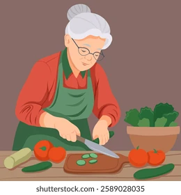

Aqui você encontra receitas simples, saborosas e fáceis de preparar. Nosso objetivo é compartilhar pratos que podem ser feitos por qualquer pessoa, desde iniciantes até apaixonados pela culinária.
O que você procura hoje?
Navegue pelas categorias e encontre receitas salgadas, sobremesas, lanches e muito mais.
- Receitas Salgadas
- Receitas Doces
- Receitas Rápidas
- Receitas Para Festa Junina
- Receitas Na Air Fryer
- Lanches Fáceis
Sobre Nós
Este site foi criado com o objetivo de compartilhar receitas simples, econômicas e saborosas para quem gosta de cozinhar ou deseja aprender novos pratos.
